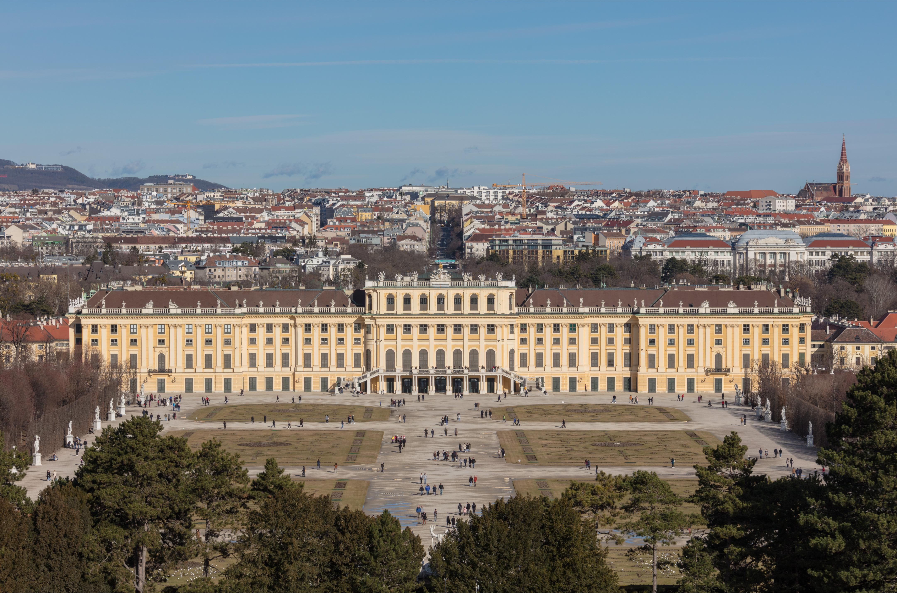
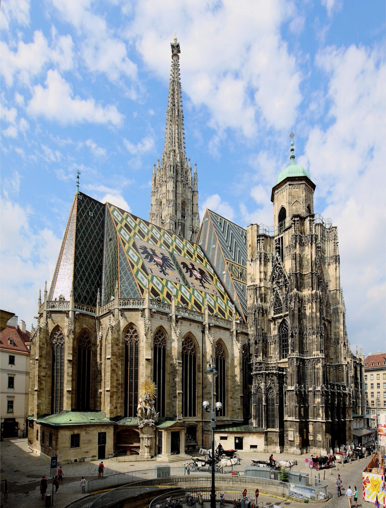
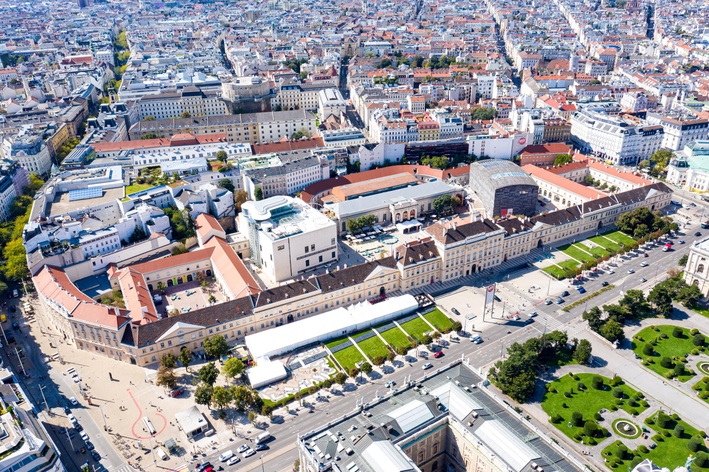
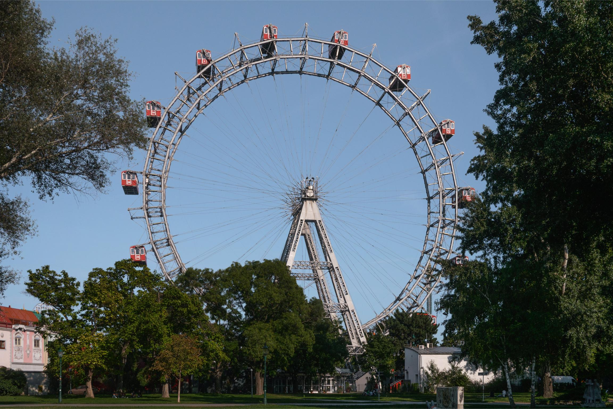

What to do and see in Vienna
Vienna is a city rich in history, culture, and vibrant life. Here are some must-see
attractions and activities to consider when visiting Vienna:
1. Schönbrunn Palace

The former summer residence of the Habsburg emporers. You can tour the state rooms and private apartments of
Empress Maria Theresia, Emperor Franz Joseph and Empress Elisabeth. Don't miss the beautiful gardens and the
Gloriette on Schönbrunn Hill for a panoramic view of Vienna. The Schonbrunn Zoo, the oldest continuously
operating zoo in the world, is also located on the palace grounds.
2. St. Stephen's Cathedral (Stephansdom)

This iconic Gothic cathedral is located in the heart of Vienna. You can climb the South Tower for a stunning
view of the city or explore the catacombs beneath the cathedral. The intricate architecture and beautiful
stained glass windows make it a must-visit.
3. Ringstrasse
Ringstrasse is a boulevard in the heart of Vienna, Austria. It is a popular tourist attraction and is home to
many of the city's most famous landmarks, including the Vienna State Opera, the Vienna State Opera House,
and the Vienna State Opera Theatre. The boulevard is also home to many of the city's most famous museums,
including the Kunsthistorisches Museum, the Naturhistorisches Museum, and the Museum of Applied Arts.
4. MuseumsQuartier (MQ)

MQ is one of the largest art and culture districts in Europe. It is home to many of the city's most famous
museums,
including the Kunsthistorisches Museum, the Naturhistorisches Museum, and the Museum of Applied Arts.
Ride the Wiener Riesenrad, (Giant Ferris Wheel)

Vienna is famous for its ferris wheel! Ride the Wiener Riesenrad for a panoramic view of the city.
Attend a Classical Music Concert or Opera
Vienna is the city of music! Attend a performance at the Vienna State Opera or enjoy a classical music
concert
at St. Peters Church or the Musikverein's Golden Hall.
Experience a Traditional Viennese Coffeehouse

Vienna is famous for its coffeehouses! Visit a traditional coffeehouse like the famous Café Central or the
famous
Café Sperl.